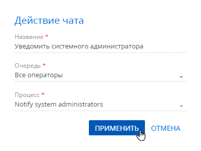

Для того, чтобы у операторов контакт-центра вашей компании появилась возможность обрабатывать в Creatio сообщения из популярных мессенджеров, необходимо выполнить ряд предварительных настроек. В общем случае порядок настройки чатов выглядит следующим образом:
-
Добавить и настроить очередь чата. На этом шаге формируется список операторов, которые будут обрабатывать сообщения чата, настраиваются правила маршрутизации сообщений и таймаут завершения чата.
-
Настроить действия чата. На этом шаге настраивается перечень действий, которые оператор может предпринять по итогам общения с клиентом, например, зарегистрировать обращение, создать заказ, отправить информационное письмо.
-
Ограничить количество активных чатов. На этом шаге настраивается максимальное количество активных чатов, которые оператор может одновременно видеть на коммуникационной панели.
-
Изменить звук оповещения о новом сообщений чата (опционально). На этом шаге вы можете настроить для операторов узнаваемый сигнал о новых сообщениях чата.
-
Добавить каналы чатов. Канал чата в Creatio — это источник, из которого в систему будут добавлены сообщения клиентов. Например, публичная страница в Facebook. В Creatio доступны следующие каналы чатов:
Каналы, по которым в приложении есть хотя бы один чат, недоступны для удаления. Если данный канал неактуален, деактивируйте его.
Настройки, необходимые для работы с чатами, выполняются в разделе Настройка чатов дизайнера системы. Настройка выполняется администратором системы или пользователем, у которого есть права на системную операцию “Доступ к разделу “Настройка чатов” (код “CanManageChats”).
Добавить очередь чата
Для обработки сообщений в чатах необходимо создать и настроить одну или несколько очередей. Очередь чата определяет, какой группе сотрудников будет направлен в работу чат. Количество очередей не зависит от количества каналов и определяется бизнес-целью. Например, для сообщений со страницы бренда можно настроить очередь чата “Служба поддержки”, а для обработки запросов из интернет-магазина — “Продавцы-консультанты”. Очереди для операторов чата создаются в разделе Настройка чатов дизайнера системы. Чтобы добавить очередь чата:
- Перейдите в дизайнер системы по кнопке
 .
. - Откройте раздел Настройка чатов.
- В области Очереди чата нажмите кнопку .
- В открывшемся окне заполните параметры новой очереди:
- Название — отразите в названии очереди ее назначение или целевую роль. Например, “1-я линия поддержки”.
- Правило маршрутизации — алгоритм, определяющий, на кого из операторов очереди будет назначен новый чат.
- “На всех” — новый чат будет доступен всем операторам, которые назначены в текущей очереди.
- “На свободного” — чаты будут назначаться автоматически на самого свободного оператора в момент распределения. Самым свободным считается оператор, у которого меньше всего чатов в работе на момент распределения. При равном количестве чат будет направлен на того оператора, который дольше всех не брал новые чаты в работу. Если оператор не берет чат в работу в течение 5 минут, то выполнится перераспределение на следующего оператора, а текущий оператор переходит в статус “Неактивный”. Это время можно изменить в системной настройке “Таймаут на взятие чата в работу оператором” (код “OmniChatOperatorAcceptChatTimeout”). Для продолжения работы с чатами оператору необходимо будет поменять статус в коммуникационной панели на “Активный”.
- Таймаут для завершения чата, минут — максимальное время ожидания с момента последнего исходящего сообщения в чате до его автоматического завершения. По истечению установленного времени данный чат будет автоматически завершен. После завершения чата по таймауту последующие сообщения клиента будут обработаны как новые и распределены на активных операторов. Если значение в поле не установлено, то чаты не будут завершаться автоматически.
- На детали Операторы нажмите кнопку
 . В открывшемся окне укажите пользователей или роли, которые будут обрабатывать сообщения в чатах. Например, вы можете использовать организационную роль “Менеджеры колл-центра”. Вы можете добавить в список операторов несколько пользователей или ролей. Также один и тот же пользователь может быть добавлен в операторы нескольких очередей чатов.
. В открывшемся окне укажите пользователей или роли, которые будут обрабатывать сообщения в чатах. Например, вы можете использовать организационную роль “Менеджеры колл-центра”. Вы можете добавить в список операторов несколько пользователей или ролей. Также один и тот же пользователь может быть добавлен в операторы нескольких очередей чатов.
Настроить действия чата
Действия чата позволяют упростить и автоматизировать обработку сообщений. В продуктах Service Creatio преднастроено действие “Создать обращение”, по которому запускается бизнес-процесс “Создание обращения из чата” (CreateCaseFromChat). Вы можете настроить список действий, которые будут доступны оператору при обработке чата, например “Создать заказ”, “Уведомить менеджера об оплате счета” или "Уведомить системного администратора". Для этого в Creatio должен быть создан процесс, который будет запускаться при работе в чате. Подробнее о создании и настройке процессов читайте в блоке Настройка процессов (BPMN). Когда процесс готов, необходимо сформировать для него действие чата:
- Перейдите в дизайнер системы по кнопке
.
- Откройте раздел Настройка чатов.
- В области Действия чата нажмите кнопку .
- В появившейся мини-карточке укажите:
- Название — заголовок действия, который отобразится для оператора при работе с чатом.
- Очередь — выберите очередь чата, операторам которой будет доступно данное действие.
- Процесс — выберите процесс, который будет запускаться по действию чата.
- Нажмите Применить.
Рис. 3 — Пример настройки действия чата
Ограничить количество активных чатов на коммуникационной панели
Вы можете настроить для операторов ограничение количества активных чатов, которые они могут обрабатывать одновременно. По умолчанию в системе настроено ограничение до 2 чатов. Чтобы его изменить:
- Перейдите в дизайнер системы по кнопке
.
- Откройте раздел Системные настройки.
- Перейдите в системную настройку “Количество одновременных чатов” (код “SimultaneousChats”).
- В поле Значение по умолчанию укажите необходимое количество чатов, которые оператор сможет обрабатывать одновременно. По умолчанию это 5 чатов. Если у оператора в работе максимально доступное количество чатов, то новые он не увидит, пока не завершит хотя бы один чат. Это ограничение распространяется на все доступные для оператора каналы чатов.
- Нажмите Сохранить.
Изменить звук оповещения о новом чате
Вы можете заменить стандартный сигнал уведомления о новых сообщениях чата, чтобы операторы легко его идентифицировали. Для этого:
- Перейдите в дизайнер системы по кнопке
.
- Откройте раздел Системные настройки.
- Перейдите в системную настройку “Звук уведомления о новом чате” (код “OmniChatNotificationSound”).
- Нажмите Очистить значение, чтобы удалить стандартный сигнал.
- Нажмите Выбрать файл и загрузите файл с вашего компьютера.
- Нажмите Сохранить.